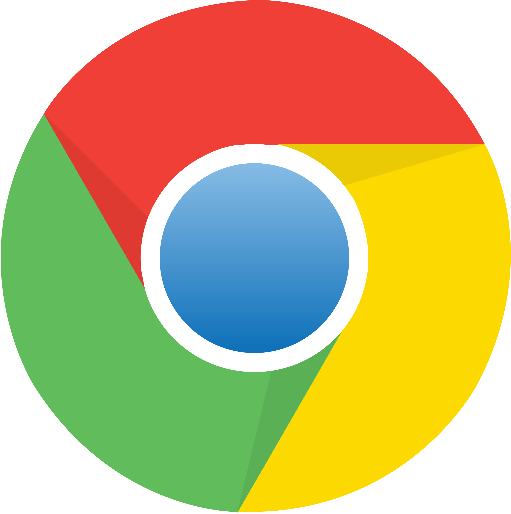

¿Recuerdas haber entrado en una biblioteca a principios de los 90? Los estantes están llenos de libros, cada uno cuidadosamente escrito e impreso, listos para leer. La interacción en esta biblioteca es mínima: solo se puede leer lo que otros han escrito. Esta era la realidad de internet en la época de la Web 1.0. Como una biblioteca gigante, proporcionaba acceso a la información, pero la oportunidad de convertirse en autor estaba limitada a unos pocos privilegiados.
Una década después , esta biblioteca se transformó en un vibrante foro . Las estanterías siguen ahí, pero ahora puedes añadir tus propios libros y revistas, dejar comentarios e interactuar con otros lectores. Esta es la era dinámica e interactiva de la Web 2.0 , donde los usuarios han pasado de ser lectores pasivos a participantes activos, enriqueciendo la web con su propio contenido e ideas.
Con la Web 3.0 , entras en un nuevo mundo: una biblioteca inteligente en red donde los libros no solo se leen, sino que también se comprenden y se recomiendan por máquinas a lectores potenciales con el perfil adecuado . Este mundo de la Web 3.0 utiliza inteligencia artificial y tecnología blockchain para hacer que internet sea no solo más interactivo, sino también más seguro y eficiente.
En una biblioteca Web 4.0 del futuro, los asistentes inteligentes ayudarán a los usuarios prediciendo preguntas, recomendando contenido apropiado y brindando una experiencia inmersiva e intuitiva.
Acompáñenos en un viaje a través de la fascinante evolución de Internet, desde los inicios estáticos de la Web 1.0, pasando por la revolución interactiva de la Web 2.0, hasta las posibilidades inteligentes de la Web 3.0 y la Web 4.0. Descubra cómo cada fase ha transformado nuestra vida digital y qué nos depara el futuro.
Aunque los términos Internet y web a menudo se usan indistintamente, en realidad significan cosas diferentes:
Internet es la infraestructura física, como centros de datos, enrutadores o cables de fibra óptica. Permite a los usuarios transferir o intercambiar información y datos en todo el mundo.
La World Wide Web es un sistema de documentos y recursos interconectados, como sitios web y navegadores, enlaces y URL.
En otras palabras, la infraestructura de Internet constituye la base de la web de aplicaciones, que es sólo una de las capacidades de Internet, junto con, por ejemplo, el FTP (Protocolo de transferencia de archivos) para transferir archivos o el correo electrónico para enviar mensajes electrónicos.
Empecemos por un viaje al pasado de la web, a las fases 1.0 y 2.0, y de ahí al presente de la Web 3.0 y al futuro de la Web 4.0 y más allá. En cada fase, podemos observar el dominio alternado de la tecnología y las aplicaciones como motores de crecimiento, así como el orden y la intensidad con que la creación de redes y la digitalización afectan a diferentes áreas de la vida y el trabajo.
Los inicios de Internet se conocen a menudo como la Web 1.0, también conocida como web estática o web de solo lectura. El científico británico Tim Berners-Lee inventó la World Wide Web en 1989 con la intención de coordinar el intercambio automatizado de información entre universidades e institutos . Los datos se intercambiarían mediante HTTP, el Protocolo de Transferencia de Hipertexto. Casi cuatro años después, el 30 de abril de 1993, el CERN abrió la web al público.
En la Web 1.0, la comunicación era bastante unilateral: al igual que las bibliotecas de principios de los 90, los sitios web eran creados por unos pocos con los conocimientos necesarios y leídos por muchos, sin que los lectores pudieran generar contenido ni interactuar. El contenido se actualizaba manualmente y era principalmente texto, complementado con gráficos sencillos. La navegación era a menudo lineal y poco intuitiva para los estándares actuales.
Las tecnologías dominantes en esta fase fueron HTML (lenguaje de marcado de hipertexto) para la estructuración de contenido, HTTP (protocolo de transferencia de hipertexto) para la transferencia de páginas web y arquitecturas sencillas de servidor-cliente . También se crearon los primeros motores de búsqueda y sitios de comercio electrónico , pero no eran ni de lejos tan potentes como lo son hoy. El motor principal fue claramente la proliferación de la tecnología, que permitió la expansión de la web a través de la interconexión de instituciones y sus servidores/ordenadores.
Con la llegada de la Web 2.0, Internet experimentó una transformación revolucionaria: pasó de ser una red de información estática a una plataforma dinámica e interactiva de contenido generado por el usuario. La Web 2.0 se centró en la interactividad, la participación del usuario y las redes sociales. Características de la Web 2.0 , como blogs, redes sociales y wikis, permitieron la participación activa de los usuarios. Las redes sociales en la Web 2.0 transformaron la comunicación a largo plazo.
La Web 2.0 utilizó tecnologías más avanzadas como AJAX para proporcionar una experiencia de usuario más rápida y fluida. Los sitios web se convirtieron en plataformas donde los usuarios no solo podían consumir contenido, sino también crearlo y compartirlo activamente. Esta era estuvo marcada por la introducción de las redes sociales y el contenido generado por el usuario , que transformó Internet en un espacio vibrante y colaborativo. Las plataformas de redes sociales permitieron a los usuarios conectarse globalmente, compartir ideas y experiencias, y formar comunidades. Los blogs, wikis y foros continuaron fomentando la creación y distribución de contenido generado por el usuario en tiempo real , transformando la web en un espacio de información rico y diverso. Con el triunfo del teléfono inteligente y la digitalización y la creación de redes de personas asociadas, este desarrollo se amplificó muchas veces. Hoy en día, las redes sociales son casi exclusivamente móviles. Esta digitalización tangible ha fomentado la disponibilidad masiva de aplicaciones, lo que se ha hecho tecnológicamente posible en particular gracias a las tecnologías de la nube en el campo de las aplicaciones.
El desarrollo más reciente, conocido como Web 3.0, marca otro hito en la evolución de internet. 3 En comparación con las versiones anteriores, Web 1.0 y Web 2.0, la Web 3.0 se caracteriza por la integración de algoritmos inteligentes, inteligencia artificial (IA) y la extensa interconexión de datos de objetos individuales . El objetivo de la Web 3.0 es hacer que internet sea más comprensible para las máquinas y, por lo tanto, proporcionar servicios personalizados y predictivos. Los datos se estructuran para que las máquinas puedan leerlos y comprenderlos. El uso de ontologías y metadatos permite reconocer relaciones complejas entre datos y proporcionar información intuitiva. La inteligencia artificial desempeña un papel fundamental en la Web 3.0 al permitir el procesamiento y análisis de grandes cantidades de datos. El Internet de las Cosas (IdC) conecta dispositivos físicos y sensores que recopilan e intercambian datos continuamente. Estas tecnologías trabajan juntas para crear sistemas inteligentes y adaptativos que simplifican nuestra vida diaria. El enfoque en los datos legibles por máquinas, y por lo tanto en la interconexión de objetos, continúa y es uno de los motores del desarrollo de la Web Semántica. Otras tecnologías que apoyan la descentralización y la interacción en redes dinámicas sub y ad hoc también están desempeñando un papel cada vez más importante.
La tecnología blockchain promueve la confianza y la seguridad en internet mediante la descentralización. La distribución de datos entre varios nodos reduce el riesgo de manipulación y errores, a la vez que aumenta la transparencia. El (I)IoT y la web semántica están creando nuevos espacios de datos en internet que también proporcionan el marco de interacción para nuevas redes interempresariales. Con la Web 3.0, la tecnología se está convirtiendo una vez más en el motor de la evolución de internet. Hará que la web sea más inteligente, segura y eficiente, y la posibilidad de un mundo completamente interconectado se hará realidad.
Finalmente, miremos hacia el futuro: la Web 4.0 o la web simbiótica aún no existe, pero podemos hacer algunas conjeturas fundamentadas basadas en las tendencias actuales. 4 Tecnologías como la realidad aumentada (RA) y la realidad virtual (RV) continuarán fusionándose con la IA y el Internet de las cosas (IdC), de modo que Internet no solo interactuará de forma activa e inteligente con nosotros, sino que también actuará de forma proactiva . La Web 4.0 representa una comunicación hombre-máquina aún más estrecha en la que los dispositivos del IdC interactúan activamente con los usuarios. Esta próxima etapa de desarrollo cambiará fundamentalmente la forma en que interactuamos con el mundo digital y desdibujará aún más los límites entre la realidad y el entorno virtual. 5 Por lo tanto, es probable que la digitalización y las aplicaciones vuelvan a ser las fuerzas impulsoras detrás de la evolución de la Web. De la Web 1.0 a la Web 2.0 de personas y la Web 3.0 de datos y cosas, podemos esperar una Web 4.0 de servicios que controlen el flujo de datos entre nodos virtuales y reales. ¿Qué servicios podemos esperar en dicho metaverso ?
Cada fase ha influenciado el uso de Internet a su manera: la Web 1.0 hizo accesible la información, la Web 2.0 permitió las interacciones sociales y el contenido colaborativo, la Web 3.0 mejoró la eficiencia y personalización de los servicios, y es probable que la Web 4.0 traiga la integración perfecta de los mundos virtuales y físicos . La continua evolución de Internet muestra que los límites de lo que es posible a través de la creación de redes y la digitalización se están expandiendo constantemente. Las posibilidades futuras podrían incluir una integración aún mayor de Internet en nuestra vida diaria a través de tecnologías como la Internet de las cosas, la realidad aumentada y virtual, y una IA más avanzada que responda de manera más proactiva e inteligente a nuestras necesidades. Pero también podría abrir un capítulo completamente nuevo que cambiará fundamentalmente no solo nuestra relación con la tecnología, sino también la forma en que trabajamos y hacemos negocios, y por lo tanto, la industria en su conjunto.
La evolución de Internet es un viaje apasionante que continúa abriendo nuevas e innovadoras formas de interactuar digitalmente. Cada innovación tecnológica trae consigo nuevas oportunidades y desafíos. A pesar de las diferentes fases por las que ha pasado, hay una constante: la capacidad de Internet para conectar a las personas, compartir conocimientos y fomentar la innovación, construyendo un mundo digital . A medida que avanzamos, persiste una pregunta clave: ¿qué aporta realmente a nosotros como seres humanos y en qué tipo de mundo (digital) queremos vivir? Es fundamental que en Europa sigamos siendo guardianes activos y nos convirtamos en creadores aún más importantes de la web del futuro.
El rápido desarrollo de la web demuestra la estrecha relación entre la digitalización y las innovaciones técnicas. Las empresas que utilizan tecnologías del futuro como la IA, el IoT y la cadena de bloques en una etapa temprana pueden aprovechar las oportunidades que ofrece la Web 4.0.
